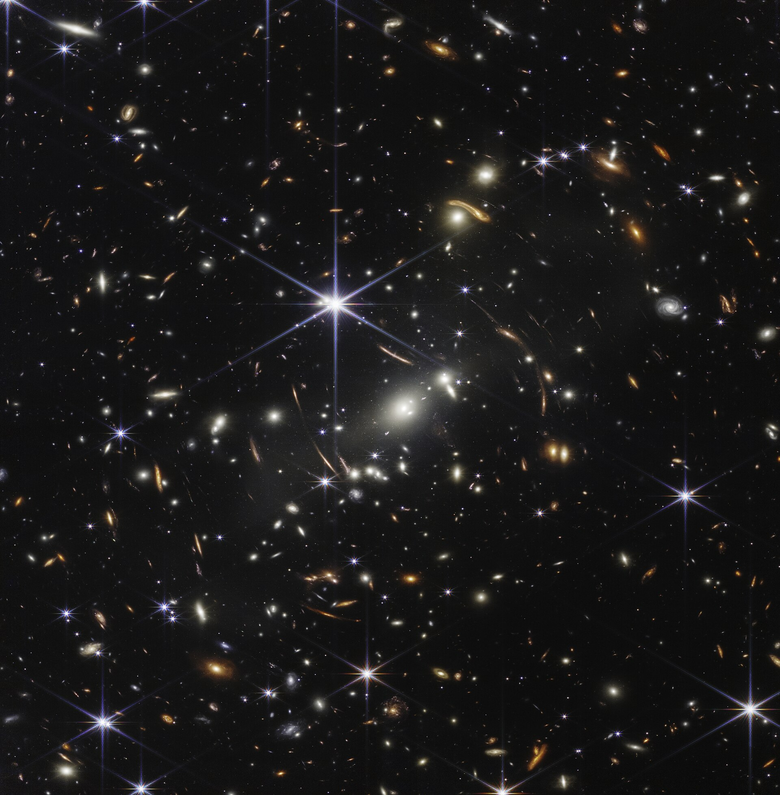
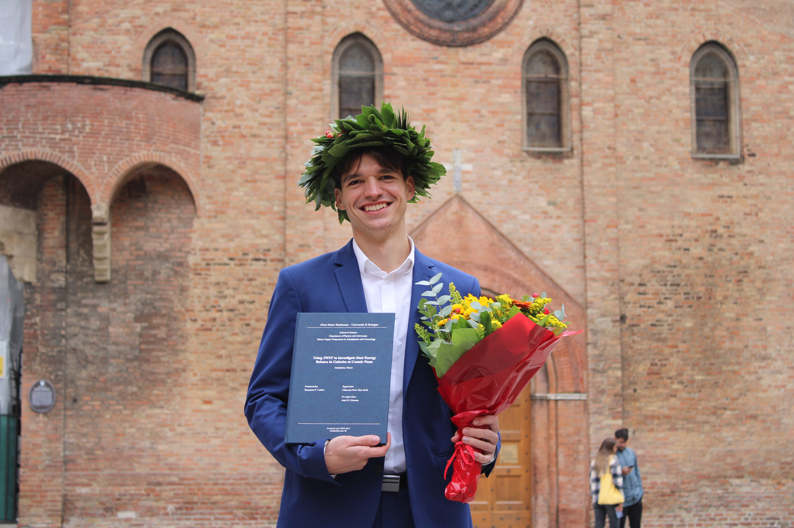
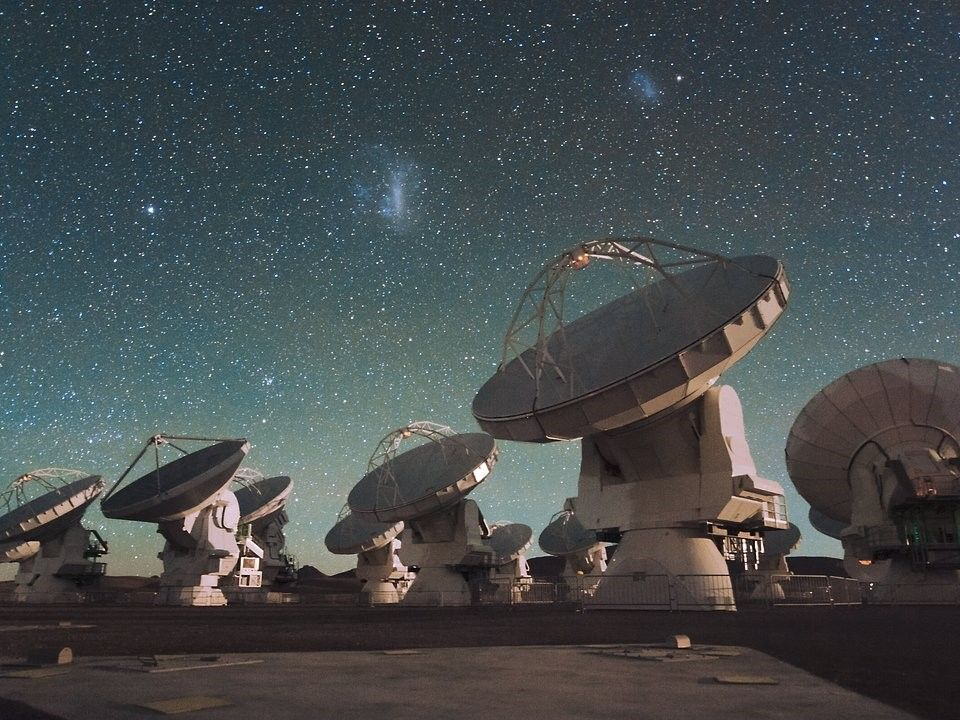

World-leading Observatories
Chile serves as the world's capital for observational astronomy, hosting a large number of international telescopes that span optical, infrared, and submillimeter wavelengths.
Departamento de Astronomía (DAS)
Universidad de Chile, Santiago
Hey, I am Benjamin and welcome to my personal website! I am a first-year PhD student in astronomy at Universidad de Chile, where I am studying the evolution of galaxies starting from the epoch of reionisation (EoR). I am also passionate about science communication and outreach, and I am always looking for opportunities to share my love of astronomy with others. Feel free to reach out to me for collaborations or inquiries through any of the channels below or by using the contact form at the bottom of the page.

Growing up in Austria, I obtained my undergraduate degree in Technical Physics from the Vienna University of Technology (TU Wien) in 2023. I graduated from the master's programme in Astrophysics and Cosmology from the University of Bologna in October 2025. As of March 2026, I am a PhD student in Astronomy at the Departamento de Astronomía (DAS) at Universidad de Chile, where I am part of the extragalactic research group led by Dr. Charlotte Simmonds. My research focuses on topics reaching from constraining dust and ISM properties in galaxies at z ~ 2 to critical analyses of SED fitting codes and their underlying assumptions. I am also interested in studying the epoch of reionisation (EoR) and the formation of the first galaxies, which I hope to explore in the future using the Atacama Large Millimiter/Submillimeter Array (ALMA) together with the James Webb Space Telescope (JWST).

My focus lies in the study of high-redshift galaxies and their evolution through cosmic time, starting from the Epoch of Reionisation (EoR). I am particularly interested in using multiwavelength data to characterise the composition of the interstellar medium (ISM) and the role of dust in these systems. As a member of the Chilean research community, I aim to leverage the James Webb Space Telescope (JWST) and the unique multi-wavelength capabilities of Chile's world-class observatories to open a new window onto the early universe. Click the button below to find out more about my past and ongoing research projects.

I present my research at seminars and actively participate in international summer teaching programmes. My upcoming and past contributions include discussions on dust energy balance at cosmic noon and galaxy evolution in the early universe. Below is a selection of my recent publications and presentations.

Science is meant to be shared. Beyond research, I am dedicated to open-source software, collaboration efforts, and supporting outreach activities for the local community.
Chile serves as the world's capital for observational astronomy, hosting a large number of international telescopes that span optical, infrared, and submillimeter wavelengths.

The Department of Astronomy (DAS) at Universidad de Chile actively engages in public outreach initiatives to share the wonders of our universe with local communities.

Committed to open, reproducible science by developing software tools and accessible datasets.

As a member of SOCHIAS, I am part of an unmatched international astronomical community pushing the frontiers of astronomical discovery.
In parallel with my research, I actively develop open-access software packages for the community and invest time in teaching the next generation of scientists.
Experienced as a Teaching Assistant in undergraduate courses for industrial and environmental engineers at TU Wien teaching calculus, analysis and algebra during in-person problem-solving classes of up to 40 students.
Published my first stand-alone Python package miriutils and the resulting photometric catalogue for the community. Experienced with SED fitting codes (Bagpipes and Prospector), cosmological N-body simulations (Gadget-2), and processing multi-wavelength datasets through Xspec and CASA.
Passionate about science communication and engaging in outreach activities in multiple languages.
If you want to collaborate or have questions about my research or outreach efforts, feel free to send me a message through the contact form below!